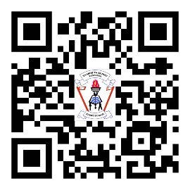

Utangulizi
Kitabu cha Utamaduni, Sanaa na Michezo, kimetayarishwa kwa kuzingatia Mtaala na Muhtasari wa Elimu ya Msingi wa Mwaka 2023, uliotolewa na Wizara ya Elimu, Sayansi na Teknolojia. Kitabu hiki ni Toleo la Pili kilichoboreshwa kutoka katika kitabu cha Michezo na Sanaa, kilichochapishwa mwaka 2018 kwa kuzingatia Mtaala wa Mwaka 2016. Lengo la kitabu hiki ni kumwezesha mwanafunzi kujenga umahiri katika Utamaduni, Sanaa na Michezo kupitia shughuli mbalimbali za ujifunzaji katika maeneo yafuatayo:
- 1. Kuthamini utamaduni wake na wa watu wengine;
- 2. Kuheshimu tofauti za kiimani;
- 3. Kuonesha matendo ya kimaadili;
- 4. Kubuni kazi za sanaa; na
- 5. Kucheza michezo sahili.
Jifunze zaidi kupitia maktaba mtandaohttps://ol.tie.go.tz au ol.tie.go.tz

Taasisi ya Elimu Tanzania